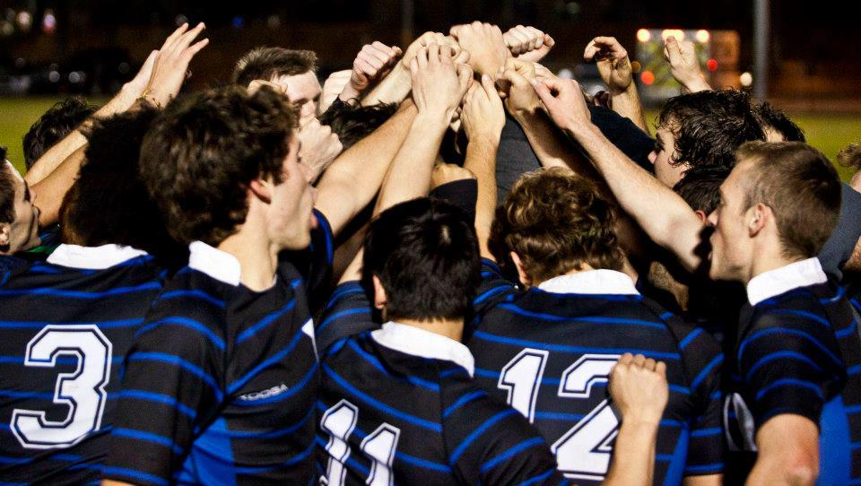
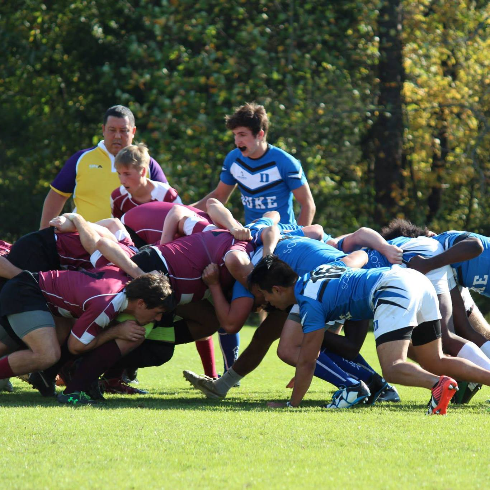
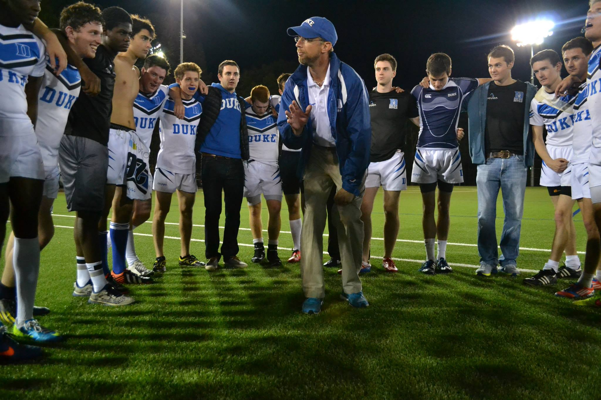

ABOUT THE CLUB
Captain's Message
Four score and seven years ago our fathers brought forth on this continent, a new nation, conceived in Liberty, and dedicated to the proposition that all men are created equal.
Now we are engaged in a great civil war, testing whether that nation, or any nation so conceived and so dedicated, can long endure. We are met on a great battle-field of that war. We have come to dedicate a portion of that field, as a final resting place for those who here gave their lives that that nation might live. It is altogether fitting and proper that we should do this.
But, in a larger sense, we can not dedicate ~~ we can not consecrate ~~ we can not hallow ~~ this ground. The brave men, living and dead, who struggled here, have consecrated it, far above our poor power to add or detract. The world will little note, nor long remember what we say here, but it can never forget what they did here. It is for us the living, rather, to be dedicated here to the unfinished work which they who fought here have thus far so nobly advanced. It is rather for us to be here dedicated to the great task remaining before us ~~ that from these honored dead we take increased devotion to that cause for which they gave the last full measure of devotion ~~ that we here highly resolve that these dead shall not have died in vain ~~ that this nation, under God, shall have a new birth of freedom ~~ and that government of the people, by the people, for the people, shall not perish from the earth.
Club History
In early November Duke faced off against the University of Mary Washington in the final of the NSCRO regional championship round. Unfortunately, Duke suffered its first loss of the year against UMW, ending Duke’s run at a National Championship. In early May, however, UMW withdrew from their Sweet 16 match, to be played a week later, following disciplinary action from their university. On short notice the NSCRO leadership awarded the spot to Duke University. This second chance was not without its challenges, as we had only a week of XV’s practice versus teams that has been preparing for the Sweet 16 since the fall. Nevertheless the team and especially its seniors were delighted to have one more opportunity to play XVs. After beating the University of North Florida in the round of 16, Duke faced off against a strong Mount St. Mary’s team in the Elite 8. Although our team was far more skilled in ball handling and tackling, the size of the Mount St. Mary’s pack made maintaining possession in scrums very difficult. In the end this would prove to be too much for us to overcome, and we were eliminated despite a very strong showing. We are looking forward to competing again next year!
In February a squad of 16 traveled to Las Vegas, NV for the Annual Las Vegas Invitational Rugby Tournament, the largest amateur rugby tournament in North America. This great event is part of the growth of U.S. rugby and among the events leading up to the HSBC Sevens Las Vegas stage. Led by Asst. Coach Robert King, Duke 7s played in the Men’s College 7s league, comprising the U.S. DII-DIII schools as well as top clubs from Canada and the Caribbean (ineligible for the U.S. DI College Rugby Championship group). Duke went 1-2 on Day 1, beating Regis University 22-5 but falling to both the University of British Columbia and the Brock Badgers. On Day 2, Duke again went 1-2, beating Regis 14-0 in the Shield Final. After 2 days of the sevens actions the team spent the rest of the weekend enjoying the HSBC Sevens tournament.
Thanks in large part to our generous alumni, this season saw the club progress in a few meaningful ways. After our breakout 2012-2013 season, in which we reached the NSCRO Championship, Duke reaffirmed its place atop the Cardinal Conference (VA, NC) and continued to build on its reputation as one of the best teams in the NSCRO Southeast Region. Second, through the Facebook page our club now reaches 300 Duke Rugby alumni with a steady stream of team news, photos and video. Third, thanks to our club’s growing repute, Head Coach Mike Morgan will be teaming up with Nike to host a Nike rugby camp at Duke University this summer for boys aged 12 - 18. To all those who have made this growth possible, thank you for your continued support, and GO DUKE!
